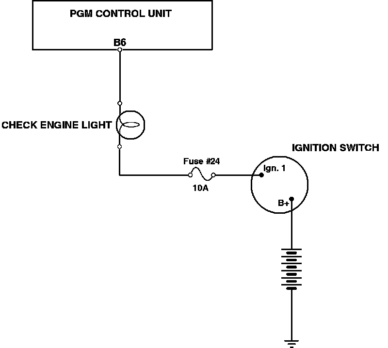

Malfunction Indicator Lamp: Description and Operation
Check Engine Light Operation:

PURPOSE
The malfunction indicator light light is used to notify the vehicle operator that a fault has occurred in the PGM-FI electronic's. It'S also used to retrieve fault codes.
LOCATION
Instrument cluster.
OPERATION
Battery voltage is present at one bulb terminal any time the ignition is turned ON. This signal comes from ignition switch terminal Ign. 1. When a system fault is detected, the ECM completes ground, causing the bulb to illuminate. The light is also grounded for two seconds after engine start up to verify the light is functional.